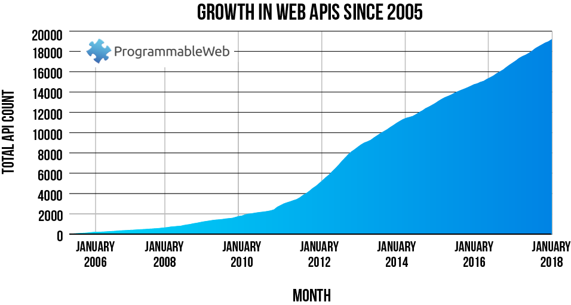

Acessando APIs: Estudo de Caso do Twitter
Nossos planos para hoje.
O objetivo deste workshop é ensinar os primeiros passos de como coletar dados na internet. No primeiro dia, aprendemos como raspar dados de sites estáticos. Hoje, aprenderemos como acessar APIs. Vamos seguir a seguinte rotina:
Introdução a APIs. O que fazem? Onde vivem? O que comem?
- Acessando APIs via http.
- Estudo de caso na API do Fogo Cruzado.
- Exemplos de pacotes de R para acessar APIs
- Fogo Cruzado
- Dados do Congresso (bRasilLegis)
Exercício
Utilizando a API do Twitter.
Introdução a APIs. O que fazem? Onde vivem? O que comem?
A sigla API corresponde às palavras em inglês “Application Programming Interface“. No português “Interface de Programação de Aplicações”. Em linguagem não técnica, uma API é um repositório on-line construído para facilitar troca de informações. Muita empresas constroem este repositórios para diversas funções, entre elas, compartilhar dados, receber dados, gerenciamento conjunto de banco de dados, e fornecer funções ou maquinas de inteligência artificial para uso do público.
Vamos pensar um exemplo capaz de motivar a criação de uma API. Imagine que você é o dono do Twitter. Você teria zilhões de hackers todos os dias tentar fazer raspagem dos seus dados, isso tornaria seu site mais instável, e inseguro. Qual a solução? Você cria uma API, e passa a controlar quem acessa a informação, quando acessão, qual tipo de informação você torna disponível, e ainda ganha uns pontos do mercado dos dados abertos.
Para entender como uma API funciona, a metáfora do Matrix feita pelo Curso-R é excelente. Lembrem-se do filme Matrix. Os sobreviventes no mundo Matrix podiam conectar à uma maquina e pedir para aprender determinada habilidade - kung-fu, programação, língua, etc. Isso é exatamente o que uma API faz. Você conecta a site e pede dados, e recebe-os em retorno. É como enviar um email, porém fazendo tudo via linguagem de programação.
Usos de API
Há duas formas principais em que nós acadêmicos comumente utilizamos APIs.
- Acessar dados compartilhados por Empresas e ONGs
- Processar nossos dados em Algoritmos desenvolvidos por terceiros.
A APIs hoje são a principal forma de compartilhamento de dados. Há muitas APIs disponíveis para acesso. Por exemplo, Twitter, Facebook, Spotify, Yelp, Portal da Transparência, IPEA.. a lista é longa. Veja abaixo.

E mais recentemente há diversas APIs sendo criadas para permitir análise de dados usando inteligência artificial. Por exemplo, você pode acessar o algoritmo do google para detectar agressividade em social mídia via API O gráfico abaixo mostra essa tendência, ou para classificação de imagens, ou para detectar gastos suspeitos de políticos no Brasil.
Vamos cobrir neste workshop somente o acesso a dados via APIs. Porém, fiquem de olho na segunda onda de inovações. Tudo se move muito rápido neste campo.
Uso de API para acesso à dados.
Em seu formato mais simples, uma API é somente uma url. Veja o exemplo abaixo:
http://meusite.com/key?param_1;param_2
Principais elementos:
- http://meusite.com/: a base da API, chamado nas documentações de end-point.
- key: as credenciais que muitos sites pedem - nem todos, como veremos.
- ?param_1;param_2 parametros, ou filtros para refinar a busca da API.
Com R, uma vez que temos as credenciais, podemos simplesmente usar os parâmetros que informam a API para nos fornecer os dados. Porém, existem muitos pacotes R para facilitar o acesso a determinadas APIs. Entender os parâmetros da acesso a API nem sempre é tarefa fácil, portanto, se algum desenvolvedor tiver escrito um pacote de R, sua vida será muito facilitada. Em resumo, o uso de APIs envolvem os seguintes passos:
- Verificar se a API está disponível, e solicitar credenciais.
- Verificar se há um pacote de R disponível para acessar a API
- Ler a documentação da API, identificar a informações de seu interesse.
- Se existir um pacote de R, use-o.
- Se não existir, escreva seu código e limpe os dados.
Fogo Cruzado API
Vamos começar como exemplo da API do Fogo Cruzado. O primeiro passo é verificar a existência da API, e solicitar credenciais. Aqui eu descrevi para os participantes do workshop como solicitar essa credencial.
Acessando sua senha
# Pacotes para acessar APIs
library(httr)
library(jsonlite)
library(tidyverse)
# Solicitar a senha
get_jwt <- httr::POST("https://api.fogocruzado.org.br/api/v1/auth/login", query = list(email = "venturat@umd.edu",
password = "xxxxxx"))
# Pegar a senha
token <- httr::content(get_jwt)$access_token
# token = sua senha de acesso à API. Nao compartilhe por ai.Agora que temos nossa credencial, vamos olhar a documentação da API. Neste link vocês encontrarão a documentação. Nela, podemos extrair as seguintes informações.
Base da API

Filtros da API
A principal informação do site do fogo cruzado são as ocorrências de tiroteio no Rio de Janeiro e Recife. Na documentação, o ponto para acessar as ocorrências é simplesmente adicionas /occurrences na base da api. Vamos acessar nos primeira API
# Passo 1. Crie a Url
base_url <- "https://api.fogocruzado.org.br/api/v1"
occurences <- "/occurrences"
api <- paste0(base_url, occurences)
print(api)[1] "https://api.fogocruzado.org.br/api/v1/occurrences"# Passo 2: Acesse a API
response <- GET(api, add_headers(Authorization = paste("Bearer", token, sep = " ")))
# Qual o resultado?
responseResponse [https://api.fogocruzado.org.br/api/v1/occurrences]
Date: 2019-12-15 20:46
Status: 200
Content-Type: application/json
Size: 18.9 MBO retorno da API é um arquivo em JSON - que é um tipo mais eficiente para salvar arquivos grandes - e possui status 200 - que significa seu acesso funcionou. Vamos agora limpar esse arquivo JSON. Limpar arquivos de json pode ser complicado, por isso, vamos tocar somente a superficie aqui.
# Converter para um json
json_fogo_cruzado <- content(response, as = "text", encoding = "UTF-8")Isto é o que um arquivo de JSON parece. O código acima somente converte a conexão com a API para um longo texto. Esse texto possui separadores - muitas vezes hierarquicos - e chamamos esse arquivo de JSON. O pacote de R rjson permite-nos transformar este arquivo em um banco de dados

output <- fromJSON(json_fogo_cruzado) %>% tibble::as_tibble()
glimpse(output)Observations: 26,920
Variables: 23
$ id_ocorrencia <int> 8758, 10431, 10430, 16, 17, 1...
$ local_ocorrencia <chr> "Maré, Rio de Janeiro - RJ, B...
$ latitude_ocorrencia <dbl> -22.85750, -22.93538, -22.748...
$ longitude_ocorrencia <dbl> -43.24302, -43.19463, -43.410...
$ data_ocorrencia <chr> "2018-01-09 15:57:00", "2018-...
$ hora_ocorrencia <chr> "15:57:00", "20:54:00", "18:3...
$ presen_agen_segur_ocorrencia <int> 0, 0, 0, 1, 1, 1, 0, 0, 0, 0,...
$ qtd_morto_civil_ocorrencia <int> 0, 0, 0, 0, 0, 0, 0, 0, 0, 0,...
$ qtd_morto_agen_segur_ocorrencia <int> 0, 0, 0, 1, 0, 0, 0, 0, 0, 0,...
$ qtd_ferido_civil_ocorrencia <int> 0, 0, 0, 0, 0, 0, 0, 0, 0, 0,...
$ qtd_ferido_agen_segur_ocorrencia <int> 0, 0, 0, 0, 0, 0, 0, 0, 0, 0,...
$ fonte_ocorrencia <int> 0, 0, 0, 1, 0, 0, 0, 0, 0, 0,...
$ estado_id <int> 19, 19, 19, 19, 19, 19, 19, 1...
$ cidade_id <int> 3661, 3661, 3602, 3661, 3661,...
$ nome_cidade <chr> "Rio de Janeiro", "Rio de Jan...
$ cod_ibge_cidade <int> 3304557, 3304557, 3300456, 33...
$ gentilico_cidade <chr> "carioca", "carioca", "belfor...
$ populacao_cidade <int> 6320446, 6320446, 469332, 632...
$ area_cidade <int> 119746, 119746, 7782, 119746,...
$ densidade_demo_cidade <chr> "5.27", "5.27", "6.03", "5.27...
$ nome_estado <chr> "Rio de Janeiro", "Rio de Jan...
$ uf_estado <chr> "RJ", "RJ", "RJ", "RJ", "RJ",...
$ cod_ibge_estado <int> 33, 33, 33, 33, 33, 33, 33, 3...Vamos adicionar alguns filtros ao nosso pedido. Para isso, devemos adicionar uma query de filtros na função GET. Estes filtros devem ser solicitados de acordo com a documentação da API.
query_list <- list(presen_agen_segur_ocorrencia = "1", uf_estado = "RJ")
response <- GET(api, add_headers(Authorization = paste("Bearer", token, sep = " ")),
query = query_list)
output <- jsonlite::fromJSON(httr::content(response, as = "text", encoding = "UTF-8")) %>%
tibble::as_tibble()Cidades com mais ocorrências no Rio de Janeiro
output %>% count(nome_cidade) %>% top_n(10) %>% arrange(n) %>% ggplot(., aes(y = n,
x = nome_cidade)) + geom_col() + theme_minimal() + coord_flip() + ylab("Tiroteios com Presença Policial") +
xlab(" Cidades do Rio de Janeiro")Visualização com Mapas
Podemos visualizar essa informação com mapas. A função get_googlemap na verdade acessa a API do google maps e faz download do mapa do Rio de Janeiro. Para isso, você precisa liberar o seu acesso à API via google aqui. Isso fica como um exercício para o futuro.
library(ggmap)
library(RColorBrewer)
ggmap(get_googlemap("rio de janeiro", zoom = 11, maptype = "roadmap", scale = 2)) +
geom_point(data = output, aes(x = longitude_ocorrencia, y = latitude_ocorrencia),
color = "tomato2", alpha = 0.8, size = 0.3)But! Nós chechamos se havia algum pacote de R disponível para o Fogo Cruzado?
Uma das maiores vantagens do uso de R reside no fato de se tratar de uma linguagem gratuita e de código aberto. Como resultado, há milhares de programadores trabalhando em desenvolver pacotes e tornando-os acessíveis ao público. Há dois lugares onde esses pacotes são hospedados. O repositório oficial do R chamado CRAN, ou no github - um local onde programadores tornam seus códigos disponíveis.
Se alguem tiver desenvolvido um pacote para acessar a API, você vai ganhar muito tempo usando o pacote diretamente, ao invés de entender toda a documentação da API, como fizemos. Vamos buscar o pacote de R para acessar o Fogo Cruzado.
Este link contém o site do pacote de R, e as recomendações de como utilizá-lo. Como disse, o pactoe está no github. Segue a instalação:
# Instalação do pacote
install.packages("devtools") # pacote para acessar o github
devtools::install_github("voltdatalab/crossfire")library(crossfire)
# Registra usuario e senha, e envia sua senha da API
fogocruzado_signin(email = "venturat@umd.edu", password = "ptds42420678")
# Extrair os dados que pegamos manualmente antes
fogocruzado_rj <- get_fogocruzado(state = "RJ", security_agent = 1)
# Colocar em gráfico mais uma vez.
ggmap(get_googlemap("rio de janeiro", zoom = 11, maptype = "roadmap", scale = 2)) +
geom_point(data = fogocruzado_rj, aes(x = longitude_ocorrencia, y = latitude_ocorrencia),
alpha = 0.8, size = 0.5, color = "darkred")Muito mais fácil!
Congressbr
Para terminar o dia de hoje, vamos praticar um pouco mais com o excelente pacote congressbr. Este artigo sobre o pacote oferece uma excelente introdução à como utilizá-lo, e um sumário de outros pacotes para facilitar acesso à APIs com dados brasileiros.
# Instale o pacote
install.packages("congressbr")
devtools::install_github("RobertMyles/congressbr")O pacote permite o acesso às APIs da Câmara e do Senado. Há quatro funções principais no pacote
- cham_votes(): retorna informação sobre votações na Câmara.
- cham_bills(): retorna informação sobre atividade legislativa na Câmara.
- sen_votes(): retona informação de voto no Senado.
- sen_bill_search(): Procura por atividade legislativa no Senado.
Caso você queira entender mais sobre cada uma das funções, há alguns caminhos. Em primeiro lugar, procure a documentação da API. Em segundo, leia a documentação do pacote ou a sua página no github. Outra opção, é pedir ajuda para entender a função de seu interesse.
Vamos ver algumas das funções do pacote abaixo. Em primeiro lugar, darei um exemplo de como pedir ajudar, e entender a função.
library(congressbr)
# Ajuda em R
`?`(cham_legislator_list)Essa imagem irá aparecer diretamente no seu R Studio. Ela explica o que a função faz, o que retorna, e exemplo de como utilizá-la. Somente de copiar e colar o exemplo, você já terá uma boa dimensão da função.
all <- cham_legislator_list()
glimpse(all)Observations: 513
Variables: 13
$ legislator_id <chr> "73701", "73696", "73801", "74848"...
$ legislator_status <chr> "Titular", "Titular", "Titular", "...
$ legislator_name <chr> "BENEDITA SOUZA DA SILVA SAMPAIO",...
$ legislator_cham_name <chr> "BENEDITA DA SILVA", "ANGELA AMIN"...
$ legislator_photo_url <chr> "http://www.camara.gov.br/internet...
$ legislator_gender <chr> "feminino", "feminino", "masculino...
$ legislator_state <chr> "RJ", "SC", "PE", "RJ", "PI", "PR"...
$ legislator_party <chr> "PT", "PP", "PCdoB", "PCdoB", "PP"...
$ legislator_cabinet <chr> "330", "252", "915", "622", "640",...
$ legislator_building_address <chr> "4", "4", "4", "4", "4", "4", "4",...
$ legislator_telephone_number <chr> "3215-5330", "3215-5252", "3215-59...
$ legislator_email <chr> "dep.beneditadasilva@camara.leg.br...
$ legislator_comissions <chr> "", "", "", "", "", "", "", "", ""...Abaixo, vou dar alguns exemplos de uso do pacote.
Número de Proposições por ano
ano <- c(2002:2018)
proposicoes <- map(ano, ~cham_plenary_bills(.x) %>% mutate(ano = .x))
# Vamos combinar tudo
proposicoes <- bind_rows(proposicoes)
# Eliminar repeticoes
proposicoes <- proposicoes %>% distinct()
# Agregar por ano
proposicoes_ano <- proposicoes %>% count(ano)
# Marcar anos pre eleitorais
proposicoes_ano <- proposicoes_ano %>% mutate(ano_eleitoral = ifelse(ano ==
2002 | ano == 2006 | ano == 2010 | ano == 2014 | ano == 2018, "Ano Eleitoral",
"Ano Não Eleitoral"))
ggplot(proposicoes_ano, aes(y = n, x = ano, fill = ano_eleitoral)) + geom_col() +
scale_fill_manual(name = "", values = c("darkred", "darkblue")) + theme_minimal() +
xlab("ano") + ylab("Proposições Votadas")Mais uma vez. O pacote permite fácil e rápido acesso a uma quantidade enorme de dados. Basta nós cientistas sociais aprendermos como utilizar-los.
Exercício 1
Encontre uma API com um pacote de R escrito. Instale o pacote, e utilize-o corretamente. A API do Ipea pode ser uma opção, ou esse pacote para acessar dados do Lattes, new york times, ou a congressbr são boas opções.
- Encontre uma API para você praticar o use da função GET. Pode ser qualquer uma. A guisa de sugestão, você pode utilizar a API do Portal da Transparência. É bem simples de acessar.
- Dica 1 : Escolha o tema, e vá em tentar agora. Depois que você encontrar o resultado, basta copiar para o R.
- Dica 2 : a url base é http://www.transparencia.gov.br/api-de-dados/
- Colete uma informação desta API. Qualquer uma. Faça um GET que retorne um resultado interessante